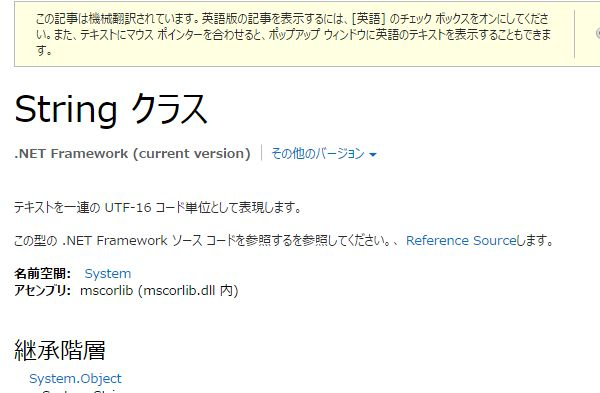
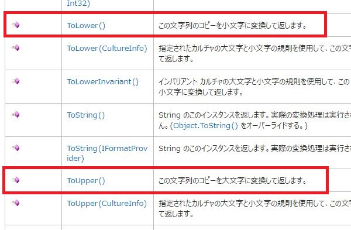
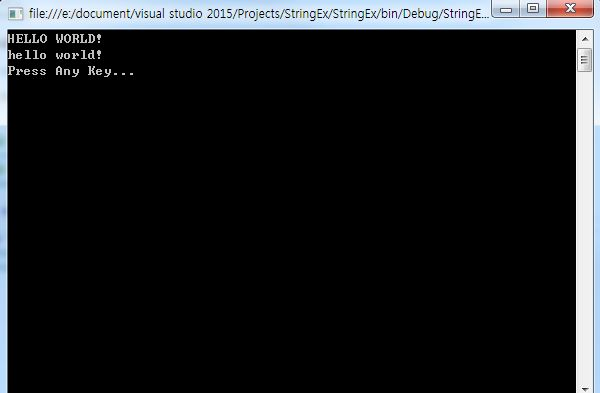
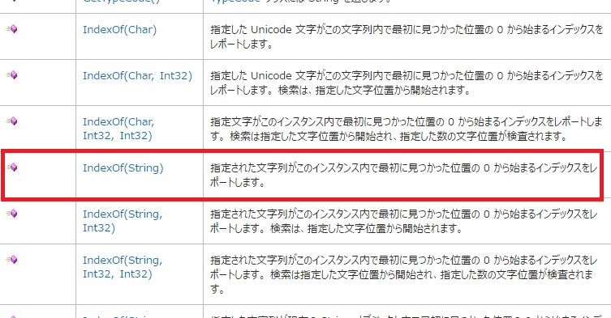
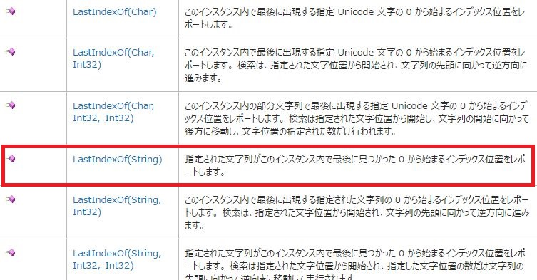
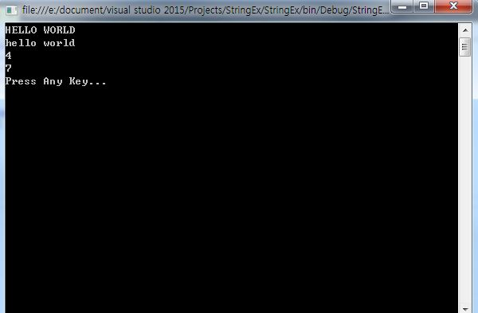

[C#] MSDN(Microsoft Developer Network)
こんにちは。明月です。
ここまで「C#」の基本的な文法については大体に勉強したと思います。これからは「C#.Net Framework」から提供する「Class」について勉強するかと思いますが、実は「C#.Net Framework」から提供する「Class」はすごく多いので全部できるか疑問がなりますね。（笑)
それで、「C#.Net Framework」のクラスについて勉強する前に「Class」を使う方法について調べてみようかと思います。
「.Net Framework」には「Class」を全て勉強しなくても、「Class」の構成について説明しているマニュアルがあります。我々はそれを「MSDN(Microsoft Developer Network)」と言います。得にMS関連プログラマ達にはプログラムバイブルとも呼ばれます。
MSDN
「.Net FrameworkのMSDN」のアドレスは下記とおりです。
リンク - MSDN
MSDNに接続してみると様々なコンテンツがありますが、我々はプログラムの関連クラスドキュメントが必要なので「ドキュメント」項目に行きます。クラスの見る仕方を勉強するため、「String」クラスを例で「String」のドキュメントを参照してみましょう。
リンク - [MSDN]String クラス

上のアドレスで接続すると「String」のドキュメントに移動します。
「String」クラスのドキュメントを見ると「コンストラクタ」、「フィールド」、「メソッド」、「イベント」のことで区分して分けてなります。
※「String」は「イベント」がないので、実際に「MSDN」のドキュメントを見ると「イベント」項目がありません。でもイベントがあるクラスを見ると「イベント」項目があるので参考してください。
ドキュメントを全般的に見ると我々が勉強したとおりにクラス基本構造で説明しています。すなわち、ユーザが「String」オブジェクトを使うようにアクセス修飾子が「Public」段階のオブジェクトについて何のメソッドを使うとどの結果が出るかについて説明しています。
そうすると、MSDNを参照して「String」のクラスを使って見ましょう。
ドキュメントで「String」機能を見ると「ToLower()」、「ToUpeer()」のメソッドがあります。

上のドキュメントを見ると「ToLower()」は小文字に変換するメソッド、「ToUpper()」は大文字に変換するメソッドだと記述していますね。
using System;
using System.Collections.Generic;
using System.Linq;
using System.Text;
using System.Threading.Tasks;
namespace StringEx
{
class Program
{
public Program()
{
String test = "Hello World!";
//全て大文字
Console.WriteLine(test.ToUpper());
//全て小文字
Console.WriteLine(test.ToLower());
}
static void Main(string[] args)
{
new Program();
Console.WriteLine("Press Any Key...");
Console.ReadLine();
}
}
}

例を見ると「ToLower()」と「ToUpper()」はドキュメント通りに結果を返却しますね。
今回は「IndexOf()」、「LastIndexOf()」のメソッドについても勉強してみます。


using System;
using System.Collections.Generic;
using System.Linq;
using System.Text;
using System.Threading.Tasks;
namespace StringEx
{
class Program
{
public Program()
{
String test = "Hello World";
//全て大文字
Console.WriteLine(test.ToUpper());
//全て小文字
Console.WriteLine(test.ToLower());
//「Hello World」の文字列で前から初めに見つける「o」の文字の位置
Console.WriteLine(test.IndexOf("o"));
//「Hello World」の文字列で後から初めに見つける「o」の文字の位置
Console.WriteLine(test.LastIndexOf("o"));
}
static void Main(string[] args)
{
new Program();
Console.WriteLine("Press Any Key...");
Console.ReadLine();
}
}
}

上の例を見ると「IndexOf()」は「Hello World」の文字列の前から最初に見つける「o」文字の位置を返却しますね。すなわち、「Hello」の「o」文字の位置(4)を返却します。(インデックスは「0」から始まる)
「LastIndexOf」は後ろから最初に見つける「o」文字の位置を返却します。すなわち、「World」の「o」文字の位置(6)を返却します。
今まで、「MSDN」を通ってクラスのメソッドの使用方法について調べる方法を勉強しました。これから「File」扱う方法、「Xml」、「Stream」、「Socket」等のプログラムを開発する時に基本的に使うクラスを勉強するつもりですね。
その時に「MSDN」を利用して勉強するともっと理解しやすく、詳細的にクラス利用方法について勉強することができるじゃないかと思います。
そのため、「MSDN」を使用方法についてしっかり知っていくとこれから勉強することが楽になると思います。
- [C#] Thread(スレッド)2019/07/24 00:57:35
- [C#] 「IDisposable」と「using」2019/07/23 00:05:40
- [C#] ファイルシステム(File System) - FileStream、 Encoding、 Serializable2019/07/22 23:45:05
- [C#] ファイルシステム(File System) - FileInfo,DirectoryInfo2019/07/22 23:30:17
- [C#] MSDN(Microsoft Developer Network)2019/07/22 23:15:42
- [C#] Attribute(アトリビュート)2019/07/20 02:27:23
- [C#] Reflection(リフレクション)2019/07/20 02:22:03
- [C#] Objectタイプ、varタイプ(匿名タイプ)、dynamicタイプ2019/07/18 22:50:16
- [C#] Partial Type(クラス分割)、拡張メソッド2019/07/18 20:22:16
- [C#] Lamda(ラムダ)2019/07/17 23:06:42
- [C#] LINQ(リンク)-3 (Enumerableクラス)2019/07/17 20:57:00
- [C#] LINQ(リンク)-2 (メソッド式)2019/07/16 22:40:03
- [C#] LINQ(リンク)-12019/07/16 20:41:27
- [C#] event(イベント)2019/07/16 00:59:34
- [C#] delegate(デリゲート)2019/07/16 00:48:03
- [Java] Base64にエンコード、デコードする方法2020/03/09 10:24:01
- [Java] cmdコマンドを実行するための方法2020/03/06 18:01:10
- [Java] メール(javax.mail)を発送する方法2020/03/05 20:07:49
- [Java] クラス複製(Clonable, Reflection)2020/03/05 00:03:19
- [Java] シリアライズ(直列化: Serializable)2020/03/03 00:03:33
- [Java] StringBuilderとStringBufferの差異2020/03/02 07:52:22
- [Java] Compare関数を使う方法2020/02/29 03:00:00
- [Java] 数字フォーマット(お金表示及び小数点以下表示)2020/02/28 03:00:00
- [Java] サーブレット環境で現在の実行ディレクトリを取得する方法2020/02/27 03:00:00
- [Java] 日本語をユニコードに変換して、ユニコードから日本語に変換する方法2020/02/26 03:00:00
- [Java] コンソールからデータを受け取る方法(System.in)2020/02/25 03:00:00
- [Java] Servlet環境でWebSocket通信中、HttpSessionを取得する方法2020/02/24 07:47:20
- [Java] WebSocketでWeb Sessionを使う方法(Broadcast)とウェブチャットの例2020/02/22 03:00:00
- [Java] WebSocket (ウェブソケット)2020/02/21 03:00:00
- [CakePHP] Errorページを設定する方法2020/02/20 03:00:00